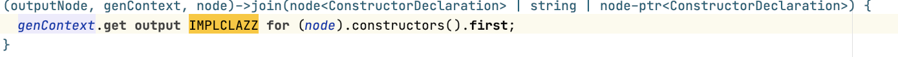

Generator Aspect¶ ⧉
The generator is a part of the language specification that defines the denotational semantics for the concepts in the language.
— MPS documentation
- Getting started with generation in MPS: extracting a generator ⧉ (Specific Languages' blog)
Are there any best practices for generators?
Can you invoke the generator from an external tool?
Yes, it can be run from Ant. Build your build solution in MPS and execute the targets clean, generate and assemble to build the languages. To run the tests, also execute check. The mps-gradle.plugin is capable of running those targets ⧉ in Gradle.
How can you copy the output to another location?
Use the @CopyOutcome ⧉ annotation.
Which variable names aren't available because they are used in the generator?
Underlined variables are specific variables that are available.
- Console: ConsoleContext context, ConsoleStream console
- Constraint:
- Scope: ReferenceConstraintsContext _context
- Type-system:
- all rules: IsApplicable2Status status, TypeCheckingContext typeCheckingContext
- comparison rule: SNode node1, SNode node2,
- inequation replacement rule
- custom condition: SNode subtype, SNode supertype,
- rule: SNode subtype, SNode supertype, EquationInfo equationInfo, TypeCheckingContext typeCheckingContext, boolean inequalityIsWeak, boolean inequalityIsLessThan
- substitute type rule: SNode originalType
- Generator:
- mapping configuration: CreateRootRuleContext _context
- Editor:
- General: SNode myNode
How does the IDE collect generators to engage on a model?
How MPS collects generators to engage on a model ⧉ (Specific Languages' blog)
generation plan (in devkit) vs. generator priorities?
The generation plan is applied instead of the generator priorities. If your generator should be applied in a model using a generation plan, your generator has to be part of the generation plan. When developing a language, which is used within an aspect, for example, type system, the MPS aspect's generation plan can block the generator.
How can you use generated classes which implement an extension point?
Let \(L_A\) be a language that offers an extension point over class \(E\). Then it is pretty simple to provide a static implementation for extension point for \(E\), for example, in another language. What if we want to map a concept \(Q\) of \(B\) to that extension point? We want to be able to generate code \(C\) from a concept instance of \(Q\), which is a subclass of \(E\), such that we can use it for the extension point over class \(E\).
- Create the extension point in the plugin aspect of a language \(L_A\).
{kind=link}
- In the generator main, you need to create two root mapping rules for \(Q\) (which is ModelMerge in our case).
{kind=link}
- map_ModelMerge maps \(Q\) to a class that extends \(E\) (here
ConceptMergeSpec). - map_ModelMerge_extension will generate an extension for \(Q\). It is an extension RootMapping which can be selected from the intention.
{kind=link}
The code for the Reference-Macro in the figure above should look like this. 
{kind=link}
Make sure you have jetbrains.mps.lang.extension included as language in the plugin.
-
Now create a solution, not a sandbox. Set Solution Kind in the properties to Other. Afterward, create a model named plugin (not optional). Add an instance of \(Q\) to your model plugin and build it. Look now at your last transient model. There must be three artifacts related to \(Q\):
-
the generated class
- the generated extension
-
an
ExtensionDescriptor, which provides all found extensions -
Now you should be able to locate your extension with a code fragment like this:
contributed by: @dbinkele
Where should you put the classes that you need on the user side and in the generator?
Move the classes to a solution and add that solution as a runtime solution to the language (in the module properties).
Can you access the output model in a property macro?
In reference macros in generators, I can use the provided outputNode parameter as an entry point into the output model of the current transformation and, for example, use this to find the root node my generated reference will be contained in. Can I do something similar in property macros? For those, there is no outputNode. I'd still like to find, for example, the node in my output model that my generated property belongs to. Is there a way to do that?
asked by: @jonaskraemer
You can try to use the post-processing function of a $MAP_SRC$ macro.
Which generation plan is used: the one of the custom generation facet or from any of the used devkits?
- Custom generation facet: If there is a GP defined, this plan is used.
- Devkits: First, MPS looks if any devkit specifies a GP. The first devKit with an associated plan is consulted, if any, and no further lookup is done. If there are no devkits with associated plans, MPS checks the facets of the devkit modules, if any is a GP provider. The first found facet serves as a provider.
What is cross-model generation?
- What is cross-model generation, and why do you care? ⧉ (Specific Languages' blog)
How to get rid of errors for missing generator dependencies?
If you use a generation plan, you can add those languages to the end of the generation plan or create a new plan ignoredLanguages that you add to your existing plan. When languages don't generate anything, their generators should also be deleted. Two tickets with some more information: MPS-32687, MPS-33874 ⧉
How do you keep some context when using the $LOOP$ macro in the generator?
There are a few solutions when you want to save additional information: You can use the VAR macro, which introduces one or more named values into the generator context, which can then be obtained from the genContext. You can save information in the session/step/transient object, which can also be accessed through genContext (this is, for example, a parameter in the $COPY_SRC$ macro). When you use the $CALL macro to call a template, you can call the template with parameters. You can also use node/.putUserObject and node/.getUserObject to store additional Java objects directly in nodes.
What is the best way to preserve SModelAttributes when weaving in a new node during generation? The newly weaved-in node does not contain the SModelAttributes from the input, and I am looking for a way to add these to the output node.
Weaving isn’t a reduction, so MPS doesn’t know if the new node should have the attributes or not. MPS_SRC is the best way, as you have input and output available.
What is an alias for a generator?
It is just an additional qualifier to distinguish the generator from other generators for the same language.
Is there something similar to the outputNode in reference macros in property macros?
No, but you can try to use the post-processing function of a $MAP_SRC$ macro.
How do reference reduction rules work?
They are useful if you want to manipulate references during generation without manipulating nodes themselves. Usually you transform node A into a new node B with a reduction rule and then you set B’s references in that rule. But sometimes you don’t need to transform A into anything.
answered by: @sergej-koscejev
How can you prioritize reduction rules in the generator?
The standard way to prioritize a set of rules is to put it into a separate mapping configuration and specify in the generator priorities tab that it should run before the main config.
How to Generate XY¶
The official documentation provides a lot of information about generator and the MPS samples contain good examples for generators. This sections answers some question that still often arise.
What can be generated?
Have a look at the language repository ⧉. You might also find other languages on GitHub. In general, there doesn't have to be an existing language. Any text can be generated with TextGen or Plaintextgen from MPS Extensions ⧉. It's also possible to generate code from an action or pre/post-processing script in the generator by using an existing Java library such as Apache POI ⧉. A tutorial for Excel can be found here ⧉.
I want to create multiple outputs for a language.
- You can use a non-root concept in your root mapping rule. For example, use the concept of the children in the root mapping rule. It will create multiple roots as long as the generated files have different names.
- Use a preprocessing script to create new root nodes (maybe a new concept if necessary) for the children and create a root mapping rule for the newly introduced concept.
- Use a dummy concept or a generation plan with a fork.
This question is also answered in the generator cookbook ⧉.
How can you generate LaTeX files?
The mbeddr documentation language can do this. Have a look at the documentation ⧉.
How can you generate some text?
Use the textgen aspect or use mps-plaintextgen ⧉ from MPS Extensions ⧉.
Can you use an alternative approach to generating code?
You can interpret your models instead. Use mbeddr.mpsutil.interpreter from the mbeddr platform ⧉.
Should you use generation plans or generator priorities?
Have a look at the motivation for generation plans in the official documentation ⧉. Generation plans should be used when the generation order is simple.
How do you generate language X from MPS?
How do I generate language XY from MPS? ⧉ (Specific Languages' blog)
How can you make sure that generator B can use the output of generator A?
- Define priorities or a fixed generation plan for \(B\) (and maybe \(A\))
- If you can't run/don't want to run both generators in the same "phase," configure them to run one after the another.
Solution 1:
- Define a \(MM\) (structure) (INFO-NODE) in \(A\), where you accumulate all required information and pass for all other generators.
- Configure \(A\) to remove INFO-NODE if not required (separate mapping configuration).
Solution 2:
- Define an annotation and store all req. infos there
- Configure \(A\) to drop annotation if not required (separate mapping configuration),
Solution 3:
- Use user objects to store required information as part of the real AST nodes.
- User objects are volatile children/properties which are not persisted but survive several generation phases. Use com.mbeddr.mpsutil.genutil to achieve this.
Solution 4:
- Define a fixed generation plan with checkpoints.
- Organize the whole generation process manually.
How to generate large strings?
Given I am writing a generator and it generates a Java string for a string property. That property holds more than 64000 characters, and the Java compiler gives me a constant string too long error. What can I do?
{kind=link}
Option 1: Extract into a separate file
Of course, it would be better not to fill the Java file too much and instead generate the string into a file that gets loaded at this place.
Option 2: Split and join again
The restriction only applies to the size of string literals. However, at runtime, it is allowed to have larger strings. So that we can split it into a concatenation that gets assembled at runtime then:
- Here we use the Guiva classes Joiner and Splitter ⧉ from
MPS.Core/google.common.baseandjava.util.Arrays. - We split the splitter at generation time into parts of a maximum of 50000 characters.
- Then we map it onto an arbitrary node with a string property, as
$LOOP$requires a node. - In the property macro inside the loop, we pull that property out of the node again (the inspector is not visible in the screenshot).
- It is a coincidence that we create nodes of the same concept and use the same property for the loop content than for the outside context node. You may light-quote anything of type string here.
{kind=link}
contributed by: @abstraktor
How do I generate a unique numeric id?
genContext.name from ("")0 in context (node) works well for this.
Note that the one-based version (genContext.name from ("") in context (node)) will yield an empty string in the first iteration. This is because it is designed to generate things like "myVar", "myVar1", "myVar2".
contributed by: @abstraktor
How do you report errors in the generator?
Use the statement genContext.show error and attach the node as the second parameter. Don't just throw exceptions, as people don't need to see fatal errors in the lower right corner when something in the generator goes wrong. The generator might not stop immediately and finish
the current step when using this statement.
Open API¶
This section is especially relevant when you want to invoke the generator programmatically. Sometimes text generation can be enough, and you don't need to invoke the generator. Make sure to first set the flag Java in the language properties of a language and the Compile in MPS flag in a solution if the compilation doesn't start.
How can you preview the generated text programmatically?
Use the MPS action TextPreviewModel or call the methods in TextGeneratorEngine ⧉ if you want to use the text generator, for example, TextGeneratorEngine.generateText(node)
How do you get the output path for a solution?
- To get an IFile ⧉, call
SModelOperations.getOutputLocation(model). - To get a string, call
ProjectPathUtil.getGeneratorOutputPath(module.getModuleDescriptor()). You have to first cast the module to anAbstractModule.
How can I check if a model requires generation programmatically?
The project view shows that generation is required if a model has been changed.. What is the source of this information, and how reliable is it?
(regarding the 2nd part of the question: sometimes the text in the project view is not up to date, but pressing F5 fixes it. Is it just the UI is not updated when the underlying state changes, or is it not appropriately updated until I press F5?)
ModelGenerationStatusManager ⧉ provides a corresponding API. This snippets shows how to use it:
Unfortunately, it isn't reliable. For example, when changing something in the model, the API behaves correctly in the first place. But after executing the Synchronize action, MPS believes that generation is not required anymore (even though the change would affect the output and Synchronize doesn't execute the generation). This odd behavior can also be seen in the project view (note: this might be outdated information).
contributed by: @till-f
How can you react to changes in generated files?
How can you introduce utility methods for a generator, for example, a pre-processing script?
- Create a new model in the generator aspect.
- Make sure to remove the @generator annotation (leave it blank).
- Add Base Language as a dependency.
- Create a class in the new model which provides the desired utility methods.
- In the generator add a dependency to the new model.
contributed by: @sergej-koscejev
How to find out whether a model is transient?
Check for the class: model instanceOf TransientSModel. There are different TransientSModel ⧉ classes, make sure you pick the linked one. If you are not inside the generator, you can use TemporaryModels#isTemporal.
Is there a way to use the typesystem in the generator and thus find out the return-type of an expression?
Yes, just import jetbrains.mps.lang.typesystem and use the type operation.
How can I set the do not generate flag for a model programmatically?
User Objects¶
User objects can be used to save temporary data in nodes. The most common use case is the generator, but this approach can also be used in the editor. Changes in user objects are not persisted in the model by default and don't trigger an update of the editor and typesystem engine. They can be persisted in the model through:
This code adds the following attribute to the model xml file: <attribute name="mps:internal:user-objects" value="REQUIRED" />
You can then add user objects which you can save by saving the module:
The persisted user object looks like this: <uo k="s:hello" v="s:world" />
Troubleshooting¶
In addition to reading the following questions, read Debugging generators ⧉ (Specific Languages' blog).
MPS can't resolve the import XY.
The solution that contains the class has to be added as a runtime solution (see here ⧉).
Why are root nodes generated more than once?
Have you used one of your root nodes as a child of another node? It will still act as a root node in this case.
No output location for XY.
Make sure that the Java facet is enabled in the properties of the language or solution. This error can often be seen when opening an old MPS project.
java.lang.NoSuchMethodError
- NoSuchMethodError ⧉ (Specific Languages' blog)
The generated code has no debug symbols.
Locate the build solution in MPS that is building your languages and adjust the Java settings:
java options <project default>
generate debug info false
generate no warnings false
fork false
compiler <default compiler>
java compliance level 1.8
java compiler options <no additional options>
copy resources false
Then set generate debug info to true.
If no Java options exist in your build solution, simply add one to the project structure.
How can you debug the differences in generation between the command line and MPS?
Given I have an MPS project and it compiles well in my MPS. I see a compile error when I run the same in a command line. How can I debug this?
The cause behind this kind of issue usually lies in one of these three things:
Issue Area 1: Settings (in place, threading)
Try turning off Apply transformations in place in your MPS settings under Build, Execution, Deployment → Generator → General, as this is unset in the command line (note that this setting doesn't appear in the search):
{kind=link}
Also, turning off the build in parallel threads may help.
Issue Area 2: Dependencies
A second issue may originate from the separate class and dependency loading types in the command line.
Issue Area 3: Generation plans
The command line build runs the generator plans that are included in a model's devkits or explicitly added to the generator facet+tab of a module. If your code starts the build for an explicit generation plan other than that, consider if a different plan could be the culprit. (Remember, right-click a model and Show Generation Plan to see if all looks as expected).
Remark 1: Inplace transformations are on or off, depending on your build script. The same applies to parallel generation. On the command line, if nothing is specified, it defaults to 4 threads. The most significant difference is that no project is opened in the command line build, which means anything that tries to access the project, including virtual files, will fail.
Remark 2: One potential source of problems could be the packaging of languages and generators. Because in the command line build generators might need to be loaded from packaged jars, any issues with that packaging could affect the generation. For example, as it may happen due to MPS-32026 ⧉, whole generator models with templates are not loaded and, therefore, not applied during the generation in the command line.
contributed by: @abstraktor
When getting a warning/log message when building an MPS model, I would like to jump to the source of the message.
For model generation errors, you can enable Build → Check models before the generation to catch errors early. If you enable save transient models ⧉, you can, for example, click on text generation error messages, and it will open the node in the transient model. There, you can `right-click the node -> Language debug -> Reveal Origin Node to go to the original node where the error occurred. For other messages in the messages tool, sometimes there is a stack trace attached that can be found in the right-click menu of the message. Advanced: additional information for other internal exceptions:
For other exceptions, such as IDE fatal errors (lower right corner of the window) you can copy the error message from the dialog and go to main menu → Analyze → Analyze stack trace. It will provide links to the places in your project where the error happened. For internal exceptions of MPS or the IntelliJ platform, you can do remote debugging (stop on exceptions) with MPS and IntelliJ Community ⧉ sources locally cloned so that you can jump to the exception directly.
Regarding full-text search, you can try edit → find → Find Text in Node Properties (Ctrl+Alt+Shift+F). All the node properties in the project are indexed, so it just searches those properties.
If there are errors/warnings in the editor, you can do Language Debug → Go to Rule Which Caused Error from the context menu to find the code which produced the error. A similar feature is Show Node Messages, which allows copying/pasting the message.
I get the error message: missing reference macro when running a generator.
The generator is not built or the language/a dependency can't be loaded. This can happen, for example after checking out a project or when a language has a dependency on the model that uses it.
Blog Posts¶
- Introduction MPS Generators ⧉ (F1RE's blog)